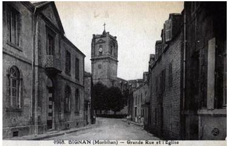
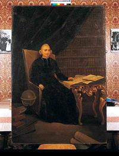
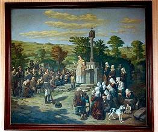
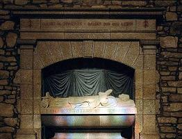
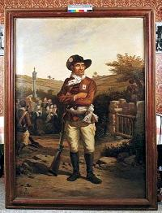
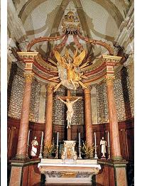

Le Prêtre exilé
The Exiled Priest
Dialecte de Vannes
|
"Chanté [à La Villemarqué] par une vieille femme de Bignan " (Selon l'"Argument" du chant dans les 3 éditions). F. Gourvil en déduit que la mère de LV devait avoir la pièce sur un imprimé avec indication de l'auteur, mais que son fils ne voulait pas révéler qu'il puisait à de telles sources. |
 BIGNAN: Eglise Saint-Pierre et Saint-Paul (18-19 siècles) L'ancienne église était tombée en ruine en 1787. La nouvelle fut érigée sur les plans de l'abbé Noury de 1787 à 1858. Depuis 1905, il y repose dans un sarcophage de granit. On lui doit aussi les plans des églises de Berné, de Guénin, de Guern, de Nazin (la tour), de Pluvigner, de Carnac (porche nord) |
"Sung [to La villemarqué] by an old woman from Bignan", according to the "Arguments" of all three editions. F. Gourvil infers that the mother of LV might have had a broadside or a book with the lyrics and the name the author printed on it, but that her son shuned mentioning that he availed himself of such trivial sources. |
Mélodie - Tune
(Cf. Gwreg ar c'hroazour).
| Français | English | ||||||||
|---|---|---|---|---|---|---|---|---|---|
|
1. Ecoutez un recteur de l'évêché de Vannes, En raison de sa foi, du royaume exilé. Son corps est loin de vous, mais non son coeur, son âme Son esprit, sa pensée ne vous ont pas quittés. 2. Depuis l'instant cruel, où des forces traitresses Et des ordres impies m'ont de vous éloigné, Vos traits, à chaque instant, à mes yeux reparaissent; Je songe à vos malheurs; jour et nuit j'ai pleuré. 3. O jour plein de douleur, o jour plein de détresse Qui m'a de mes enfants à jamais séparé! Je n'oublierai jamais- il m'obsède sans cesse- Ce désolant adieu, non, tant que je vivrai! 4. Les Juifs furent longtemps captifs à Babylone: Semblable à Jérémie, qui pleura leur malheur, Je songe à vos chagrins à toute heure qui sonne. Aux flots de l'océan je vais mêlant mes pleurs. 5. Je pleure amèrement, plein d'angoisse et d'alarmes! Seul au bord du rivage assis sur un rocher, Et j'inonde mes joues, hélas, avec mes larmes, En songeant à ceux dont la mer m'a séparé! [1] 6. Où sont-ils ces instants qu'ensemble nous passâmes? Je venais à toute heure, peuple cher et si bon, Pour vous parler de Dieu, pour écouter vos âmes Et pour vous soutenir par la communion! 7. Quel est donc votre état, o mes brebis si chères? Vous tous qui me cherchez et ne me trouvez point. Moi je n'ai plus d'enfants, vous n'avez plus de père. Et je vous cherche aussi et je vous cherche en vain: 8. Quel sort vous attend? Nul encor ne le devine. Qui vous assistera, vous portera secours? Etendez Votre main vers ces pieuses victimes, O Jésus, bon Pasteur, soutenez-les toujours! 9. Saints et saintes du ciel, des nues claires et pures, Reine du ciel, Marie, venez les secourir! Si vous les consolez de ces maux qu'ils endurent. Leur devoir par votre aide ils sauront l'accomplir. 10. Dans quels flots d'affliction t'a-t-on précipitée? O ma Basse-Bretagne, o malheureux pays! Tu fus jadis si belle et si vive et si gaie, Te voici donc bien triste et ton corps est meurtri! [2] 11. Car, sans foi, sans aveu, des cohortes de traîtres, Ont répandu sur toi le chaos, la rancoeur Et banni pour jamais évêques, moines, prêtres Et éteint pour jamais toute joie dans ton coeur; 12. Tous ont été bannis, évêques, moines, prêtres, Les soeurs ont dû quitter en hâte le pays. Et plus de sacrements, de messes qui s'apprêtent! La ronce a envahi les temples et parvis! 13. On a volé la cloche, abattu le pinacle Après avoir croix et calice profané, Et le corps de Jésus a fui le tabernacle. L'église est veuve. Un corps de ses biens dépouillé. 14. L'église, profanée, n'est plus qu'une écurie! Même le maître-autel sert de table à manger. Subissent des méchants oppressions et tueries. Les vrais chrétiens, les hommes justes, éplorés, 15. Nous sommes les auteurs des maux qui nous accablent. Nos péchés Vous irritent, mon Dieu, c'est certain. Pour mériter l'amour, il fallait être aimable; Vous vous éloignez quand nous ne le sommes point. 16. Miséricordieux, malgré Votre colère, Faites surgir la joie de nos tourment présents! Pardonnez-nous le mal que nous avons pu faire! Pitié, mon Dieu, pour nous qui sommes Vos enfants! 17. Rendez-nous Vos bontés, mon Dieu, rendez-les vite, A notre royaume et notre Eglise à la fois! Vous êtes Dieu d'amour! La pitié Vous habite. Rendez-nous ces trésors que sont la paix, la foi! 18. Quand, pasteurs et troupeau, nous verra-t-on ensemble, A nouveau réunis pour louer Vos splendeurs, Quand pourrons-nous chanter Votre gloire en Vos temples? Quand donc viendra le jour où sècheront nos pleurs? 19. Jour de félicité, de bonheur et de liesse! C'est mon unique espoir, j'y songe à tout moment. Faites, Dieu de bonté, qu'enfin ce jour paraisse Où je pourrai serrer dans mes bras mes enfants. 20. Que ce chant d'affliction qui mon âme consûme Dise à mon peuple et mon chagrin et ma douleur. Portez-lui, le message, ange aux ailes de brume Que nuit et jour je pense à son cruel malheur. 21. Au retour du printemps, rossignols, tourterelles, Vous partirez chanter, joyeux, devant leurs huis. Que ne puis-je avec vous m'enfuir à tire d'aile, Par delà l'océan, jusque vers mon pays! 22. Chantez-leur, à ma place, et de toutes vos forces: "Au fond de votre coeur, conservez votre Foi!" Qu'ils répondent alors: "Plutôt la mort atroce, Que l'oubli de mon Dieu. Je garderai Sa Loi!" [1] "Seul au bord du rivage": Comme le chant des exilés Jacobites "On Gallia's shore", les strophes 4 et 5 de cette élégie s'inspirent dU Psaume 137. Le poème de William Hamilton prophétisait la Révolution française! [2] Selon son habitude La Villemarqué a remplacé tous les mots français par des équivalents bretons. A la strophe 10 il a même remplacé le mot "France" par "Breizh Izel" ce qui en change la portée politique:
devient dans le "Barzhaz":
Traduction Christian Souchon (c) 2007 |
1. Listen to a parson from the bishopric Vannes Who because of his faith from the kingdom was banned. If his body is far from you, his thoughts linger With you, as does his heart and stay there forever. 2. Since the unfortunate and accursed day I was Banished from our country by pitiless orders, My children, you will be always before my eyes And because of your pains, I shall moan day and night. 3. O day full of dismay! Accursed and mournful day, When from my dear children I have been sent away! Never, until I die, O farewell full of woe, Shall I forget you. O, how could I forget you?. 4. Like Jeremiah or the Jews in their misfortune Who for so long have been enslaved in Babylon, Every day, thinking of your suffering, your pain I mix my bitter tears with the waves of the main. 5. Sitting upon a rock, alone, facing the shore, I whine distressfully, my cheeks with tears so sour Streaming. Anyone is heartbroken seeing me Who sits and thinks of you who dwell beyond the sea. 6. O honest and blessed folks, whither, whither have gone The happy days when I could meet everyone, Whenever I chose, to speak of our religion, Ease your hearts and comfort you with the communion? 7. O my poor, dear children! Are things to stay that way? You look for me and don't find me, day after day, I look for you, but my hope is vain and barren! You have no father more, I have no more children! 8. O my dear little yews! What can now your fate be? Who shall comfort you with his help and sympathy? O Jesus, Good Shepherd, always bear them in mind! Whenever needed, may they Your helpful hand find! 9. Blissful Spirit, Holy men and Holy women, O never give them up! Nor you, Queen of Heaven! Give them your help to do faithfully their duty As well as your solace in the difficulty. 10. Earth of Low Brittany, O desolated land! Now, in what ocean of sorrow are you plunged? You were so beautiful, so merry and so gay. Now you are stricken with horror and with dismay. [2] 11. A parcel of traitors despising Faith and Law Shattered your foundations and strive to lay you low. They have deprived you of all moral comfort With these monks and priests and bishops whom they deport. 12. Bishops and priests and monks were by them chased away. And all nuns were forced to abandon the country. Nowhere to hear a mass, to receive sacraments, And brambles thrive in our churches and our convents! 13. Altar cloth, cross, chalice, everything has been soiled And the parish churches were of their bells despoiled. The Church is a widow deprived of her heirloom In the tabernacle is for Jesus no room. 14. Desecrated churches were turned to horse stables Where the main altars are used as dining tables. True Christians and all good people are distressed Who are by wickedness everywhere oppressed! 15. O my God, our own sins are the cause of Your wrath And of our treading on painful, treacherous paths. You are faithful to us, if we're faithful to You, If we go 'way from You, You go 'way from us, too. 16. In spite of Your anger You are loving and wise And from amidst our grief You may cause peace to rise. For pity's sake, my God, forgive Your poor children The evil they have done and give them Your pardon. 17. To the whole kingdom and to the suffering church Give back Your kindness lost for which they are in search. Have pity on us all, God merciful and great. Please give us back Your peace. Please, give us back our faith. 18. When shall we be able, shepherds and flocks of yews, To gather together and sing in praise of You. When will the day at last dawn that dries up our tears, When may we sing Your praise, in Your shrines, free of fears! 19. Day of felicity! O day full of sweetness! My hope for it has been long-lasting and ceaseless. God of mercy, you may make the glad hour hasten When I can hug again in my arms my children! 20. Go, song of lament! Song of consolation, go! Go and tell my people of my profound sorrow! Carry it on your wings, good angels and tell them That morning, noon and night my thoughts are for their pains. 21. Turtledoves, nightingales, with the returning spring, You will fly to the door of my children and sing. I would be so happy, could I fly away, too, To my beloved country over the sea, like you. 22. At the top of your voice tell them, as I would do: - Preserve well your old Faith! Preserve well your old Law! - Let them answer: - We would, to keep our Faith of old Rather die a thousand times than renounce our God! - [1] "Facing the shore...": Like the song of the Jacobite exiles "On Gallia's shore", stanzas 4 and 5 of this laments are inspired by Psalm 137. William Hamilton's poem prophesied the French Revolution! [2] As was his wont, La Villemarqué turned all the French words he came across into their Breton equivalents. At stanza 10 he even replaced the word "France" with "Breizh Izel" (Lower Brittany), which modifies the political import of the piece:
reads in the "Barzhaz":
Transl. Christian Souchon (c) 2007 |
Cliquer ici pour lire le texte breton.
For Breton text, click here.

|
Bignan sous la Révolution  Pendant la révolution française de 1789, le Clergé breton, suivant les instructions du Pape, refusa dans sa grande majorité de prêter serment, selon la constitution civile du Clergé votée le 12 juillet 1790, qui attentait à la liberté de conscience et, en application du décret du 28 avril 1793, préféra s'exiler en Espagne, au Portugal et en Angleterre. Parmi eux se trouvait l'Abbé Pierre Noury (1743-1804), recteur de Bignan (5 km à l'est de Locminé), évêché de Vannes, qui, réfugié au Portugal en 1792, envoya à sa paroisse cette élégie en dialecte vannetais. Il composa aussi une tragédie sur le sacrifice d'Abrabam, et plusieurs cantiques bretons.Il ne rentra d'exil, qu'une fois la paix religieuse rétablie par Bonaparte, le 21 décembre 1801. Sa première messe dans son église dévastée fut un événement salué par la liesse de tout un peuple accouru des alentours. Dès don retour il jeta les bases d'une "maison de piété et de bienfaisance", projet achevé par l'abbé Coeffic. Il mourut le 25 juillet 1804 à Vannes où il avait été nommé curé de la paroisse St Pierre. En 1793, le 8 septembre, les habitants de Bignan, se soulevèrent, à la voix de Pierre Guillemot (1759 - 1805), qui devint le bras droit de Georges Cadoudal pour délivrer un prêtre, qu'on emmenait à Josselin. A partir de ce moment, commença une série de combats et de poursuites entre les blancs et les bleus, au milieu desquels Guillemot joua un rôle prépondérant, qui lui valut le titre de "Roi de Bignan". Ses principaux faits d'armes sont la prise de Locminé, la défaite du général Bonté en 1799, et la bataille du Pont-du-Loc en 1800. Contraint à l'exil en Angleterre et à Jersey, il rentre en Bretagne où il est reconnu et arrêté. Il est fusillé à Vannes le 5 janvier 1805 Un autre chouan vit le jour à Bignan: Yves Tyais ou Le Thieis (1761 - 1835), un "kloareg" qu'on surnomme « Bras de Fer » ou « Jupiter » et qui organisa en 1794 les premiers mouvements contre-révolutionnaires de larmée catholique et royale dans le Morbihan. Le château de Kerguéhennec, parfois surnommé le « Versailles Breton », servit d'entrepôt aux chouans pour soustraire les récoltes à la loi de réquisition des grains appliquée par l'administration républicaine. Le chant qui suit témoigne du point de vue des républicains sur la question des prêtres réfractaires: (Air des Pèlerins de Saint Jacques) Riches prélats. Il faut donc de notre bon maître Suivre les pas? Des philosophes séculiers, A la tribune, D'évêques nous ont fait meuniers Ainsi va la fortune. 2. Autrefois nous étions en France Comme des dieux Mais le peuple dans l'ignorance Ouvre les yeux. Nos saintes bénédictions Pour eux sont nulles Des excommunications Ils déchirent les bulles. 3. Pour avoir écouté le Pape, Nous voilà pris, Il est pour nous Monsieur j'attrape Notre pays; Hélas, nous ne reverrons plus!. Quelle absence, Nos pauvres têtes Il nous faut donc, comme Jésus, Vivre dans l'indigence. Note: Des philosophes séculiers: les philosophes des Lumières, Voltaire, Rousseau, Diderot, etc.. |
Bignan town during the Revolution  During the 1789 French revolution, most of the Breton clergy, following the Pope's instructions, refused to take the oath of allegiance to a Constitution, adopted on July 12th, 1790, offensive to their liberty of conscience and, pursuant to the decree of April, 28th 1793, a great many of them went to Spain, Portugal and England into exile. Among them was the Reverend Pierre Noury (1743-1804), parson of the parish Bignan (5 km east of Locminé) in the Bishopric Vannes, who from Portugal sent in 1792 this lament in Vannes dialect. He also composed a tragedy on Abraham's sacrifice and several church hymns in Breton.He went back on 21st December 1801, once the religious liberty was restored by Bonaparte. His first mass in his devastated church was a joyful event to which the whole neighbouring had gathered. Immediately after his return, he laid the foundations of a poorhouse "Maison de piété et de bienfaisance", a project that was completed by the Reverend Coeffic. He died on 25th July 1804 in Vannes were he had been appointed vicar of the parish St Peter. In 1793, on 8th September, the people of Bignan rose to deliver a priest whom the Convention forces had arrested, following the call of Pierre Guillemot (1759-1805), who was to become soon Georges Cadoudal's right-hand man. This event was followed by a series of fights and raids opposing the White and the Bluecoats, where Guillemot plaid an outstanding part, thus earning the nickname "King of Bignan". His most brilliant exploits were the capture of Locminé, his victory over General Bonté in 1799 and the battle of Pont-du-Loc in 1800. Forced to go in exile to Britain and Jersey, he went back to Brittany where ha was betrayed and arrested. He was executed in Vannes on 5th January 1805. Another Chouan was born at Bignan, Yves Tyais ou Le Thieis (1761 - 1835), a seminarist who never was ordained, whose nicknames were "Iron arm" and "Jupiter". In 1794 he took the lead of the first counter-revolutionary risings of the Catholic and Royal Army in Morbihan. Kerguéhennec Castle, sometimes dubbed as the "Breton Versailles" was used by the Chouans as a warehouse where were kept crops of corn to conceal them from requisitioning by the Republican government. The following song represents the Republican point of view on this matter. (Air of the Saint James Pilgrims) Wealthy to be. Who must now in our Master's steps Follow, but we? Mundane philosophers by their Speeches have made Of proud bishops, mill attendants. All glory must once fade! 2. We were once in the realm of France Like gods so high. But blind folks were given the chance T'open their eyes. Our blessings, however holy, For naught they care. And our dreadful excommuni- cation to shreds they tear. 3. Because we gave the Pope large powers At us they scoff. And yet this fair country is ours, Sir "Telling off". Alas, I shan't see it again. I'll be deprived Of my poor head, Or I must like Jesus disdain Earthly wealth or be dead. Note: Mundane philosophers: the philosophers of Enlightenment, Voltaire, Rousseau, Diderot, etc.. |
|
 La Convention tenta d'instituer le culte civique de l'Ëtre suprême le 7 mai 1794, par un décret dont l'article premier était:"Le peuple français reconnaît l'existence de l'¨Être suprême et de l'immortalité de l'âme." La première fête de l'Être suprême se déroula le 8 juin 1794 (dimanche de la Pentecôte) et l'on y chanta cet hymne de Théodore Desorgues sur une musique de Gossec. C'est peut-être ce culte que Robert Burns conseille malicieusement aux Jacobites d'embrasser dans "Vous qu'on dit Jacobites" Père de l'univers, suprême intelligence; Bienfaiteur ignoré des aveugles mortels. Tu révélas ton être à la reconnaissance Qui seule éleva tes autels. (bis) Ton temple est sur les monts, dans les airs, sur les ondes; Tu n'as point de passé, tu n'as point d'avenir; Et sans les occuper, tu remplis tous les mondes Qui ne peuvent te contenir (bis) ... |
 The Convention endeavoured to institute a Worship of the Supreme Being on May 7th, 1794 by a decree whose first item read thus:"The French people acknowledge the existence of the Supreme Being and the immortality of soul." The first celebration of the Supreme Being took place on June 6th, 1794 (Whit Sunday) and this hymn composed by Theodore Desorgues to a music by Gossec was sung on that occasion. This may be the worship Robert Burns cunningly prompts the Jacobites to adopt in his song "Ye Jacobites by Name" Of the universe sire and lofty intelligence, Your benevolence You hide, lesser mortals to blind, Your essence to us, grateful beings You have at last unveiled That we may erect for You a shrine. (twice) Mountains, waters and airs, all of them are Your temple; You never had a past. Each day for You is the last. And You fill out all the worlds, though in none of them You dwelled, There's no boundary You could not pass (twice)... |
![Reliquaire du cur de Pierre Noury.(Oratoire des Filles de Jesus), Bignan. XIXe siècle. La congrégation de religieuses des Filles de Jésus est créée en 1835 par l'abbé Yves Coéffic, sur les bases jetées par l'abbé Noury, auteur de la constitution et du règlement de l'établissement dont la construction est retardée par la Révolution. Consacrée à l'éducation des jeunes filles, la congrégation s'accroît rapidement et sa maison mère est transférée en 1857 à Locmaria. Elle comprend jusqu'à vingt-deux établissements. De nos jours, les Filles de Jésus poursuivent leur tâche au Canada, en Belgique et en Angleterre.](coeurnou.jpg) Le culte décadaire, institué avec le calendrier républicain (en octobre 1793) faisait disparaître toute référence au christianisme et les fêtes chrétiennes furent remplacées par des cérémonies civiles placées le 10 du mois, le decadi. On se mariait uniquement ce jour-là.
Le culte décadaire, institué avec le calendrier républicain (en octobre 1793) faisait disparaître toute référence au christianisme et les fêtes chrétiennes furent remplacées par des cérémonies civiles placées le 10 du mois, le decadi. On se mariait uniquement ce jour-là.La chanson ci-après (auteur anonyme, février 1796), proclame: (air: "Mon père je viens devant vous") On lit dans un journal chrétien Et soi-disant apostolique, Que pour être bon citoyen L'an quatre de la République Aux pieds d'un prêtre, Aux pieds d'un prêtre, il faut encor, Décliner le confiteor (bis). Pour moi, je ne souffrirai pas Qu'un tartuffe, à travers sa grille Dénombre les secrets appas De mon épouse ou de ma fille... ...L'inquisition d'Espagne Ce monstre affreux qui vit encor, Est fille du confiteor. (bis) Des réfractaires scélérats, Cette arme rapide et tacite A poignardé nos assignats Et mis l'esprit public en fuite. A decadi qui nuit encor Si ce n'est le confiteor? (bis) ... Français, les Saint-Barthélémy, Les dragonnades, les Vendées Les rois enfin peuvent encor Renaître du confiteor. J'aime Dieu, j'aime mon prochain, Sans l'entremise d'un autre homme. Mais si jamais je suis romain, Je veux qu'on l'aille dire à Rome... Je suis Français chrétien encor, Mais nargue du confiteor. (bis) Source des 3 chants ci-dessus: Dictionnaire des chansons de la Révolution 1787-1799, Ginette et Georges Marty, Editions Tallandier, 1988 |
 The Tenth-day Worship instituted along with the Republican Calendar in October 1793 abstained from any reference to Christian faith and the Christian feasts were replaced by civil ceremonies held on the tenth of the month, the so-called "decadi", especially weddings.The song hereafter (anonymous author, February 1796) exposes: (air: "Reverend, I came to you") I read in a Christian weekly, - Apostolic presumedly- That to be a good citizen In the fourth year of People's reign To a priest's feet To a priest's feet you should once more Kneel and pray the "Confiteor" (twice)... As to me I never allowed A tartuffe hid behind a grid The most secret charms to behold That my wife or my daughter bid... ...The Inquisition in Spain This still living, dreadful monster Was sired by the "Confiteor" . (twice) This non-juring villainous priests' Weapon, well-concealed and swift Stabbed in the back our assignats And put to flight public spirit. What does still harm the Tenth-day fair, If not the old "Confiteor"? (twice) ... French people, Bartholomew's day, Dragonnades and wars of Vendée, Even kings may crop up once more From the accursed "Confiteor". (twice) I love God, I love my neighbour And for that I need no succour. But if I am to be Roman I want them to go say to Rome: I am a Gaul and a Christian, I scoff at the "Confiteor". (twice) Note: Confession is a sacrament in the Roman Catholic rite consisting in the act of a penitent disclosing his sinfulness before a priest in the hope of absolution. The confessional (confession bench) has a grid separating the priest from the penitent. "Confiteor" is the first word of the prayer opening the confession ritual. Assignat= bank notes used during the French Revolution. Bartholomew's night: massacre of Protestants on August 23d 1572. Translations by Christian Souchon (c) 2007 |
Château de Kerguéhennec
"Les Chouans selon Villemarqué", un livre au format A4.  Cliquer sur le lien ou sur l'image ci-dessus |